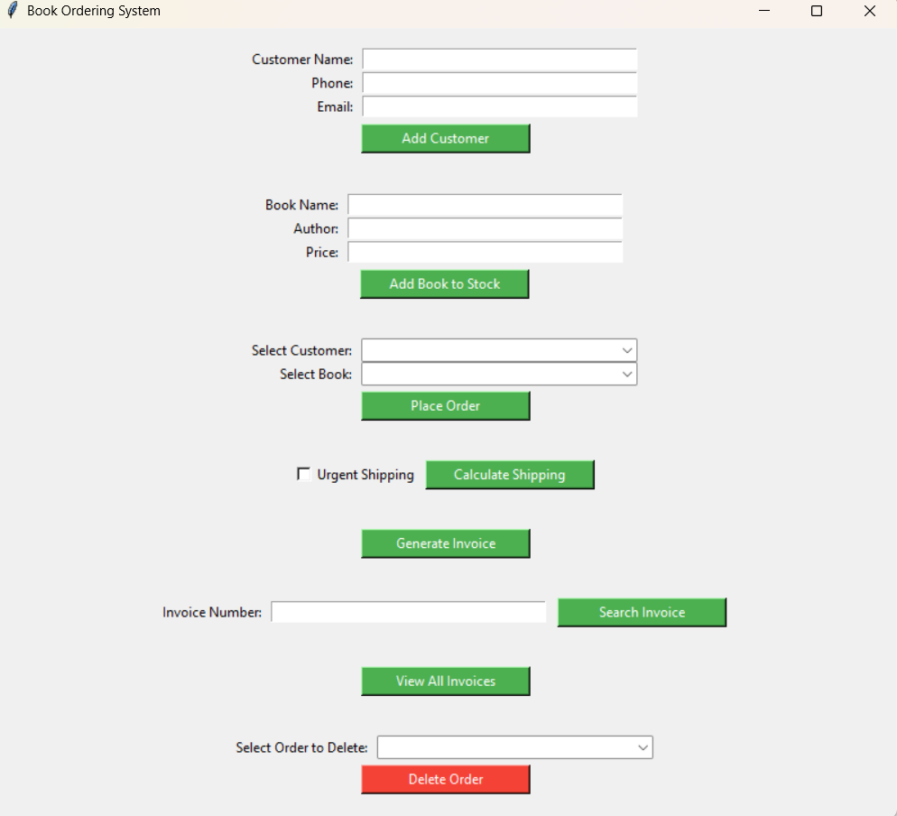
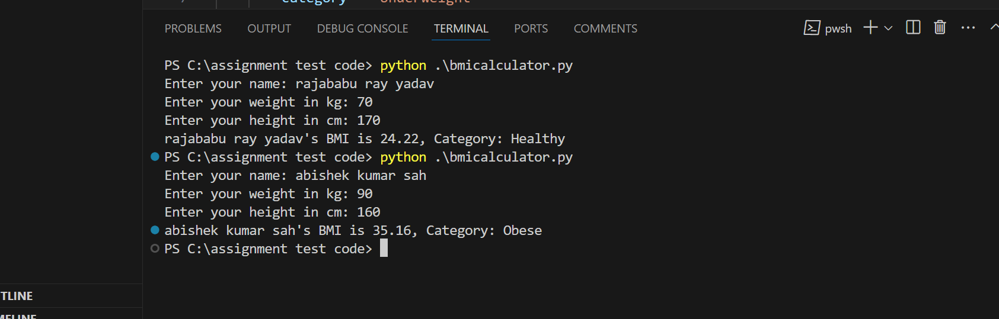
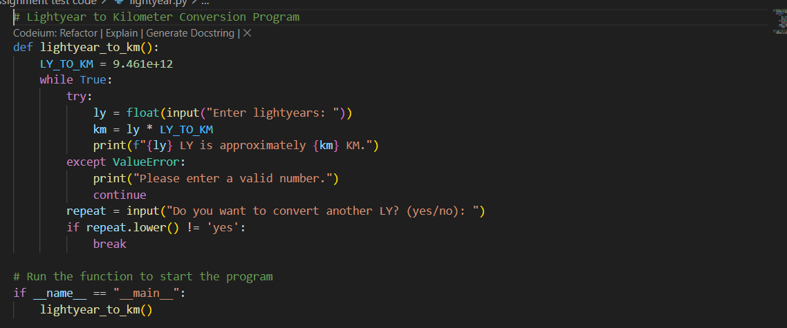
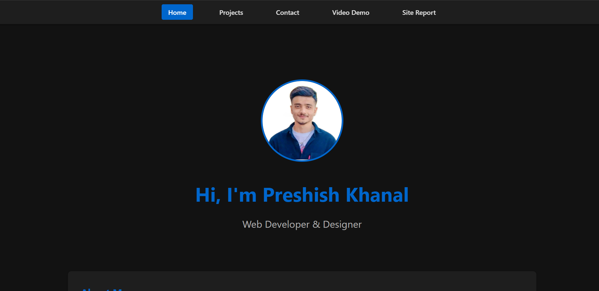

My Projects

Book Ordering System
A GUI application built with Python Tkinter that manages a book ordering system. Features include:
- • Adding and removing books
- • Processing purchases and shipping
- • Invoice generation
- • Inventory management

BMI Calculator
A user-friendly BMI (Body Mass Index) calculator application that helps users track their health metrics. The program calculates BMI based on user input and provides health status feedback.
View Code

Light Year to KM Converter
A specialized unit conversion tool that converts light years to kilometers. This program helps users understand astronomical distances by converting them into more familiar units.
View Code

Portfolio Website
A responsive portfolio website built using HTML and CSS. Features a dark theme, modern design, and showcases my projects and skills. Implements best practices in web development and responsive design.
View Code